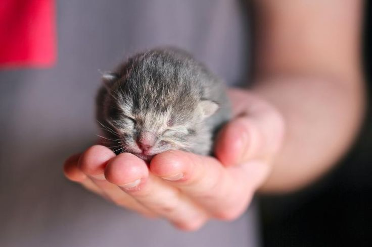

Save Meow- Kitty Rescue! Save Meow is a London-based not-for-profit animal rescue charity that provides animal first aid and critical care advice to fosterers/ carers of vulnerable orphaned kittens, elderly cats and felines with special care needs. We give vulnerable animals at risk of being euthanized by vets another chance at living a happy, full life- because that's what they deserve!
These neonatal kittens are under a week old  Kittens are extremely fragile at this age so be sure to consult with vets if hand-rearingElisabete, one of Save Meow's founders has had over 80 pet cats in her lifetime, and has experience of caring for orphaned litters, special needs animals and elderly animals.
Silvia is one of Save Meow's star web developers and keeps the website up and running, and ultimately gets our kitties into their forever homes!
Lidia is another one of our star web developers and organises the cutest of cat-themed events and volunteer groups!
Lamise inspired the team to put their love of all things cute and fuzzy into more than just staring at pictures of cute kittens instead of doing work- now their job IS looking at adorable cats!
(...They all also enjoy cat memes, and there's no such thing as too many cat videos online!)
Together, they decided to found Save Meow in 2019 with the aim of educating people in the art of kitty rescue! In the name of animal advocacy, we host workshops at local veterinary practices, organise 'meet and greet' open evenings at our local shelters, and are always seeking out new partnerships with local businesses, care homes for the elderly or children in foster care to share the stories of our most vulnerable cats- hopefully finding our furry friends a forever home in the process! Please see below guides for neonatal kitten care, emergency pet first aid, and some tips for looking after special needs animals.
If knowledge is power, knowledge of what kittens need when they're most vulnerable gives us the power to save them from premature death. Please read our emergency toolkit below for general tips to help you look after neonatal kittens.
A neonatal kitten's fur should be soft, clean, without dirt, bugs, or residue. Look for and remove fleas or flea dirt as they can cause kittens to become dangerously ill and anaemic. Ears should also be clean and not have any black wax or any crusting (telltale signs of ear mites).
The eyes and nose should be free of discharge or crust; these are signs of respiratory infections. Cat flu and other illnesses may require oral and/or ophthalmic antibiotics, especially as cats will not eat unassisted if they cannot smell their food.
The gums should be pink and wet. White or dry gums are a sign of Hypoglycemia, which can be fatal. Hypoglycemic kittens should be provided with sugar (such as Karo syrup or Dextrose 50%) and brought to a vet to get their blood sugar levels back up to a healthy range.
It is normal for newborn kittens to not open their eyes until approximately a week after birth. Do not force their eyes open before, during or after their eyes naturally open. The eyes should be bright and wet (it's normal for their eyes to look slightly 'sad' when they are very young- that's evolution at it's finest, tugging at your heartstrings!); if you notice their eyes becoming closed again or a crust developing over their eyes after having initially opened, very gently wipe their eyes softly, with very little pressure using cotton pads and lukewarm water, making sure to not dip dirty cotton pads into the water, and to use at least one cotton pad per eye so as to not reintroduce bacteria into the eye. Consult with a vet to get eye drops, oral medication and/or schedule in a vaccination once the kittens are old enough.
The nose should be moist and the skin should be elastic, otherwise the kitten may be severely dehydrated. To test for hydration, lightly pinch the skin on the back of the kitten's neck, lift an inch, and let go. The skin should quickly return to its place. Dehydrated kittens may require oral or subcutaneous fluids- please do not attempt to inject fluids into kittens without the proper training or guidance from an experienced vet! Mistakes made by an inexperienced person trying to inject fluids can be lethal to kittens.
Any wounds, injuries, and abscesses should be treated immediately to avoid any risk of infection; seeking veterinary support is the best course of action.
Elderly Cat Care
Bedding: Hammock-style radiator beds are especially warm, which older cats may appreciate, but make sure these are not too high!
Grooming: Your senior cat may struggle with grooming. Gently brush them at least weekly depending on the breed and fur type. This will help keep their skin healthy and doubles up as quality bonding time!
Injury Proofing: Senior cats still love high places, but won't be as nimble as they used to be, especially if they suffer from arthritis or another disease that causes pain. Generally as cats age, they can miscalculate the height of surfaces and so are more likely to fall; dopey and adorable as this may be, we don't want them to get hurt!
Help your cat reach their favourite high perches by providing a ramp or a piece of furniture to act as a stepping stool. You could cover this in carpet to provide extra grip. It is a good idea to make a crash mat out of pillows underneath the ramp in case the cat falls.
Toilet Training: Some litters may be too rough for an elderly cat, even if they were fine when they were younger. Don't make any sudden changes, but provide additional trays with 3cm of soft, fine litter that will feel more comfortable under their paws.
Older cats are less able to defend themselves and their territory, so they can become more anxious and more dependent on their owners, so go outside with your cat to help them to feel protected if they prefer to answer nature's call outside. Maintaining a newly dug-over border as close to the house as possible can also help relax senior cats.
For more in-depth care advice, consult the following link and follow the provided advice under veterinary guidance if necessary. You can also download this e-leaflet and this PDF document for more information.
Veterinary Care: Whilst of course it is encouraged to consult with vets frequently, especially with senior pets, there will come a time when your cat is in continual pain, discomfort or distress, and the most loving and courageous thing you can do is to end their suffering painlessly. Your vet will always do their absolute best for your pet and best help you make any difficult decisions.